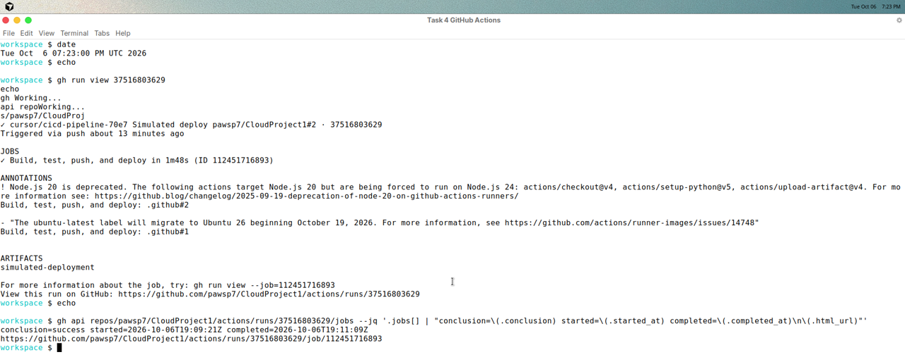
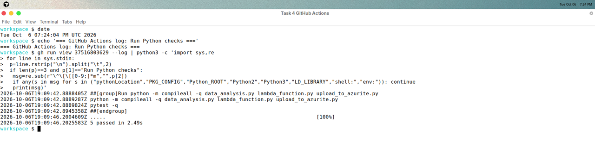
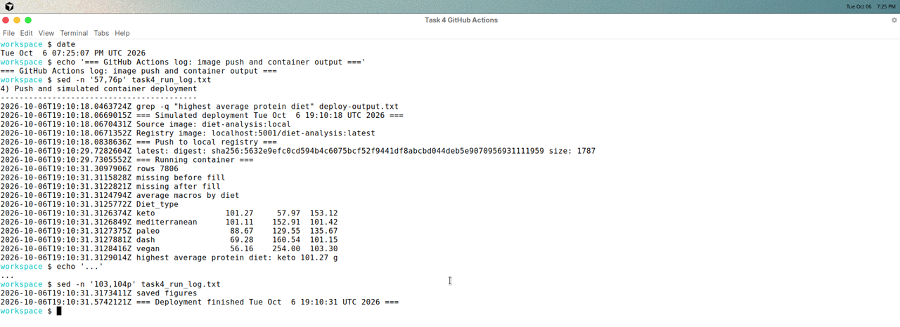
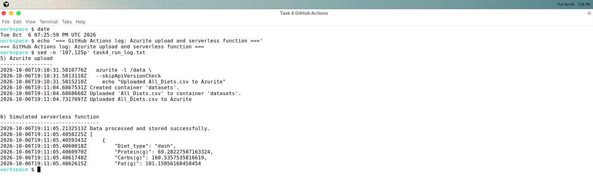

Hailey · last cloud tasks
Every time we push code to GitHub, it builds and checks the app on its own.
GitHub Actions workflow: .github/workflows/deploy.yml
GitHub Actions

Job: Build, test, push, and deploy. October 6, 2026, 7:09 PM to 7:11 PM UTC.
Tests

5 passed in 2.49 seconds. The diet calculations were still correct.
This step runs before the image is deployed.
Docker

The image was pushed to a local registry, then the container ran. Keto: about 101 grams of protein.
Azurite and two improvements

The final Docker image only keeps what it needs to run.
The function reads just the columns it uses, so it takes less memory.
Azurite stands in for Azure Blob Storage. The function printed “Data processed and stored successfully.”